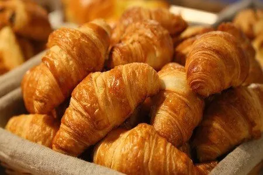
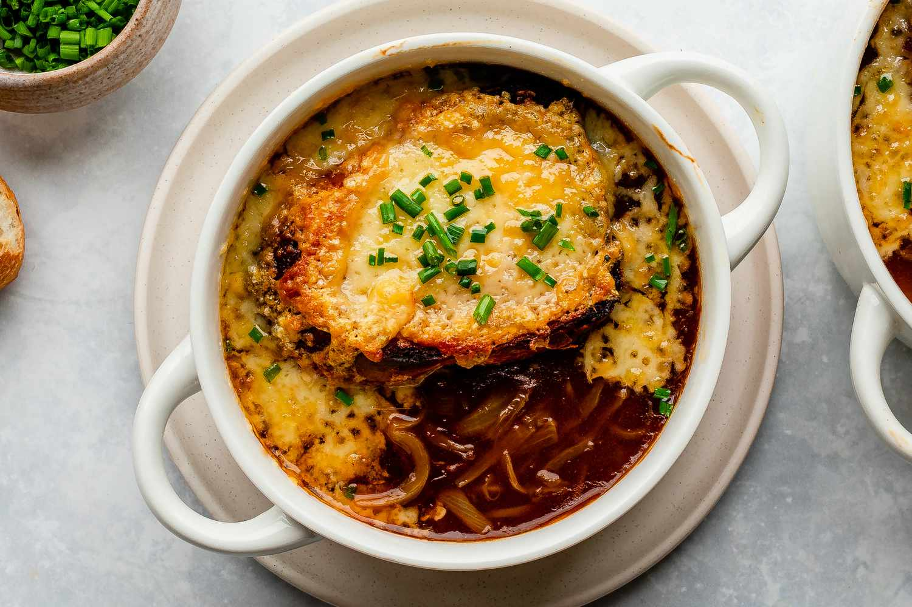
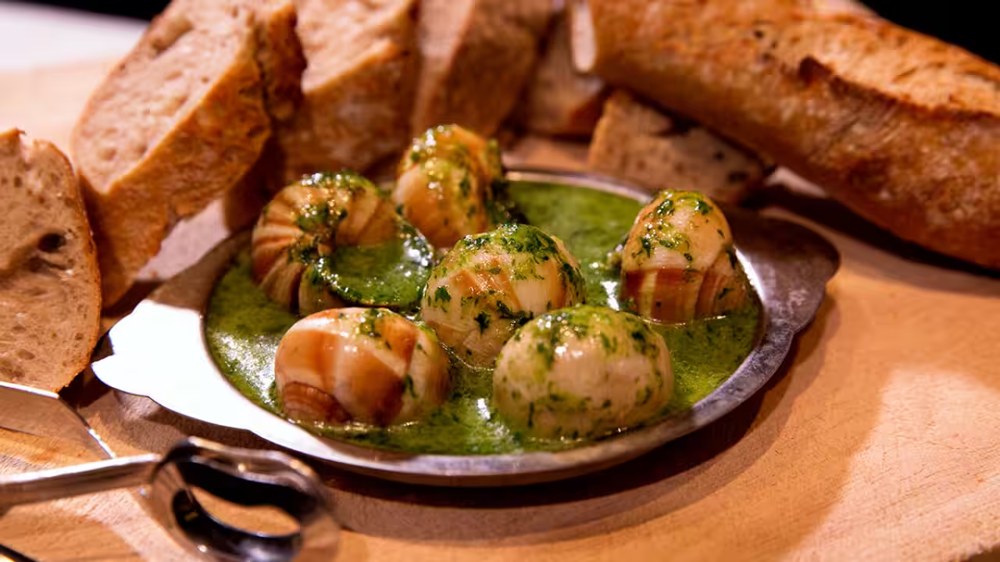

The heart of the world beats in Paris.
More than a city, a feeling!
Why Paris?
Paris is not just a city – it’s a feeling. Known as La Ville Lumière (The City of Light), Paris captures the hearts of travelers with its timeless beauty, romantic charm, and vibrant cultural energy. From elegant architecture and world-class museums to quiet cobblestone streets and riverside strolls, every corner invites you to slow down and savor the moment.
A visit to Paris means walking through history and art. Whether you're standing under the Eiffel Tower, admiring masterpieces at the Louvre, or exploring the literary cafés of Saint-Germain, you’ll find yourself surrounded by stories that shaped the world. The city seamlessly blends the old and the new, offering iconic landmarks alongside modern fashion, design, and innovation.
But Paris is more than what you see – it’s what you taste, feel, and experience. It’s the aroma of fresh croissants in the morning, the laughter in a late-night bistro, the sound of a street musician by the Seine. Paris invites you to live fully, feel deeply, and fall in love – with the city, and maybe even with yourself.
Tourist Attractions
Foods
Croissant

A buttery, flaky pastry that’s a morning essential in Paris. Freshly baked croissants are found in every corner bakery and are best enjoyed with a hot coffee while watching the city wake up.
French Onion Soup

A rich, savory soup made with caramelized onions, beef broth, and topped with melted cheese over toasted bread. It’s comforting, deeply flavorful, and perfect for cooler evenings in Paris.
Escargots de Bourgogne

Snails cooked in garlic, parsley, and herb butter — a true French delicacy. Often served as an appetizer, escargots surprise many with their tender texture and bold, garlicky flavor.